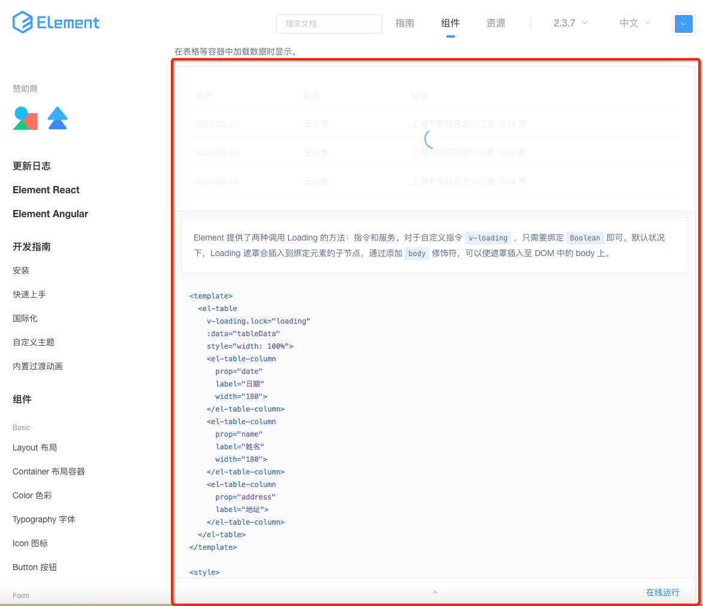

git clone git@github.com:ElemeFE/element.gitnpm inpm run dev依次完成以上步骤后，便可以在本地访问了，访问地址在命令行消息中有。
其他命令，可以查看package.json文件中scripts字段对应的命令，例如打包对应npm run dist.
重点关注两个目录
element/examples/docs/zh-CNelement/packages想对element-ui中组件的使用进行实践，可以通过对element/examples/docs/zh-CN中md文件的demo例子源码进行修改来实现；
想对element-ui中组件的源码进行调试，可以通过对element/packages中对应组件的文件进行修改来实现；
其实，
element/examples/docs/zh-CN中的每个md就对应着element-ui网站上的一个页面（例如每个组件的使用说明页面）。这些md文件主要都是通过element/build/cooking.demo.js进行处理然后转化为最终的vue组件的。其中，通过vue-markdown-loader把常规的md转化为vue组件（如下图一），通过markdown-it-container（定制化render，把数据注入到demo-block组件）把带demo标识的模块转化为源码查看和运行效果展示模块（如下图二中红色框框部分）。

本文并不准备很详细地讲解相关源码，因为笔者认为只需要大致了解其整体框架以及本地调试的方法便可，其他的具体细节，可以在需要的时候再去阅读和借鉴便可。 那么，接下来，就以loading组件为例，简单讲解一下。
loading组件的使用文档中有一个例子，分别列举了该组件“指令方式”和“服务方式”两种调用方式。因此，对应的，你会看到loading的src下面有两套源码，index.js对应“服务方式”，directive.js对应“指令方式”（如下图），当然这两种实现方式都是居于其中的基础组件loading.vue进行的二次封装，然后也都同时别loading下的index.js引用。
至于fullscreen、body、lock等之类的一些参数的实现，讲起来就比较繁琐了，源码也不是很复杂，可以在需要或有兴趣的时候进行查看。当然，官方文档，针对一些参数的说明比较简单，看完后，并不明白是什么意思的情况下，可以直接查看源码。
组件基本框架讲解完成后，我们再把目光移到element/src/index.js，这个文件引入了大量的组件，通过其引入和使用组件的方式，我们也可以基本了解到对应组件的使用方式了。下面，把loading相关的引用方式，抽取如下
import Loading from '../packages/loading/index.js'; //插件安装与使用，至此，v-loading命令可以使用 Vue.use(Loading.directive); //为Vue原型添加loading的对象获取方法，至此，可以在所有vue组件中直接用this.$loading访问 Vue.prototype.$loading = Loading.service; //当然，你喜欢的话，也可以这样来获取 let loadingInstance = Loading.service(options);{% endblock %} {% block footer_extend %} {% endblock %}